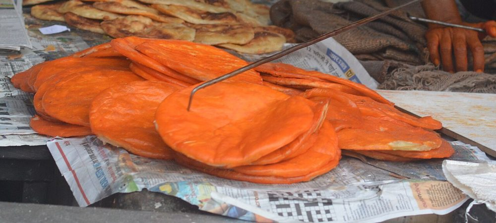

Contains: milk, gluten
Ingredients
Quantities for 6.
- 500g Maida
- 300ml, warm Milkthe shir in sheermal. This is what makes it
- 100g, melted, plus more for brushing Ghee
- 3 tbsp Sugar
- 2 tbsp Yogurthelps the crumb stay soft
- 1/4 tsp Baking Sodatraditionally sheermal is yeast-leavened; soda with yogurt gives a similar soft crumb in less time
- a generous pinch, steeped in 3 tbsp warm milk Saffron
- 4 green, powdered Cardamomoptional
- 3/4 tsp Salt
Cookware
oven, tawa
Checked against the ingredient list for ten allergens: milk, egg, fish, crustaceans, tree nuts, peanuts, sesame, mustard, soy and gluten. Brands vary, so read the label on anything new to you.
Before you start
- Steep the saffron in warm milk for at least 20 minutes so it gives up its full colour.
- The dough must rest 1 hour covered at room temperature. Skipping the rest gives a tough, cracker-like bread.
- Preheat the oven with the tray inside for 20 minutes; sheermal wants immediate bottom heat.
Method
- Dissolve the sugar and salt in the warm milk and stir in the yogurt.Warm, not hot. Hot milk cooks the yogurt into lumps.
- Mix the maida with the baking soda, rub in 60g of the melted ghee until it looks like breadcrumbs, then add half the saffron milk.
- Add the milk mixture gradually and knead 10 minutes to a soft, smooth, slightly sticky dough.Softer than a chapati dough. Resist adding extra flour.
- Cover with a damp cloth and rest 1 hour at room temperature.
- Knock back, divide into 8 and roll each into a disc 15cm across and 5mm thick. Prick all over with a fork.The fork holes stop it ballooning into a puri.
- Bake at 220C on a preheated tray for 6–7 minutes, until the surface is set and just speckled.
- Pull the tray out, brush each bread generously with the remaining saffron milk and melted ghee, and return for 3 minutes.The saffron glaze goes on partway through, not at the start, or it scorches.
- Dust with cardamom powder, stack under a cloth and serve warm with korma or kebabs.
Storage
Keeps 2 days wrapped in a cloth at room temperature, or 5 days refrigerated. Revive on a hot tawa for 30 seconds a side; the microwave makes them chewy.
Nutrition Medium estimate
Medium protein: 10 g a serving, 8% of the calories
| Per serving165 g | Per 100 g | |
|---|---|---|
| Calories | 513 kcal | 312 kcal |
| Protein | 10.4 g | 6 g |
| Carbohydrate | 73.8 g | 45 g |
| of which sugars | 10.5 g | 6 g |
| Fibre | 2.2 g | 1 g |
| Fat | 19.2 g | 12 g |
| of which saturated | 11.5 g | 7 g |
| of which unsaturated | 6.4 g | 4 g |
Ingredients given to taste count as zero, so the real figures run a little higher. Estimated from raw ingredients using USDA FoodData Central.
More like this: Vegetarian Indian recipes · No onion no garlic recipes · Awadhi/Lucknowi recipes
Times, yields, allergens and nutrition are guidance. Use your own judgement on doneness and on storing. More in About.